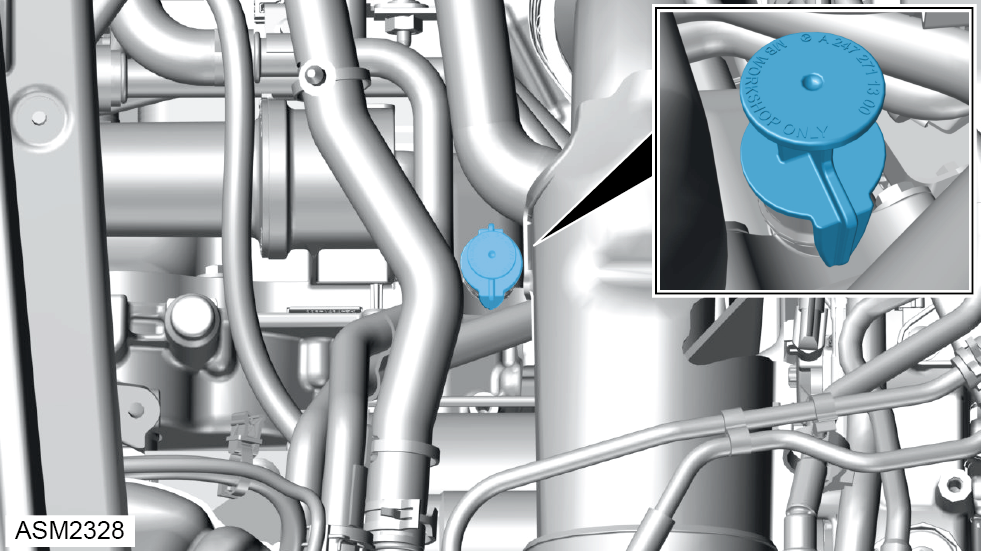
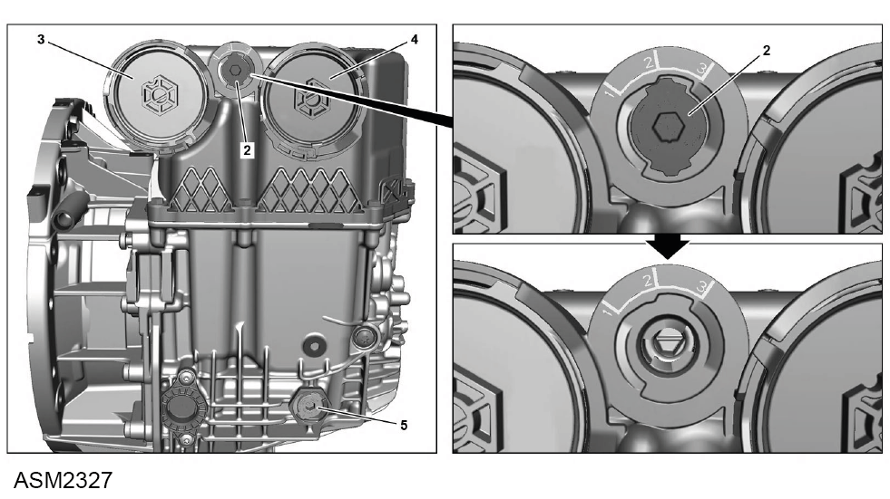

Transmission Oil Level Check - 4 Cylinder
Print
Operation Code: 47.02.07-02
Important Information
 WARNING: Transmission oil is a toxic substance and can be lethal if ingested. Wear protective gloves, protective clothing and safety glasses.
WARNING: Transmission oil is a toxic substance and can be lethal if ingested. Wear protective gloves, protective clothing and safety glasses.
Check
- Put transmission into neutral position and secure vehicle to prevent it moving.
- Connect Lotus Insight tool and start "Oil level check" routine.
NOTE: When the function is active "P" and "N" flash alternately on the instrument cluster.
NOTE: The state of charge of the battery must be a minimum of 40%.
NOTE: The transmission oil temperature must be between 40 °C and 85 °C.
- Remove rear undertray. Refer to procedure.
- Clean contact surface of
transmission.
WARNING: Only use cleaning agents and solvents in a well ventilated area.
- Coat sensor surface of measuring head (8) of oil sensor with MB Plastilube brake paste.
- Install measuring head of oil level sensor to guide tube for ultrasound measurement (9) and wait until value stabilizes.
- Compare read-off oil level with specified oil.
Top Up
- If level is low, remove fresh air inlet hose. Refer to procedure.
- Remove airbox assembly. Refer to procedure.

- Remove oil filler cap.
- Using a suitable funnel, add transmission oil until specified level is reached.

- If level is high, insert socket wrench into overflow pipe drain plug (5) and turn right to position two.
- Remove overflow drain plug.
- Drain off excess transmission oil until specified level is reached.
NOTE: Drain oil into a suitable container and dispose of appropriately.
- Install overflow drain plug.
- Turn overflow pipe drain plug left to position one and remove socket wrench.
- Remove measuring head of oil level sensor from guide tube for ultrasound measurement.
- End "Oil level check" routine and disconnect Lotus Insight tool.
- Install rear undertray.
- Install oil filler cap.
- Install airbox assembly.
- Install fresh air inlet hose.